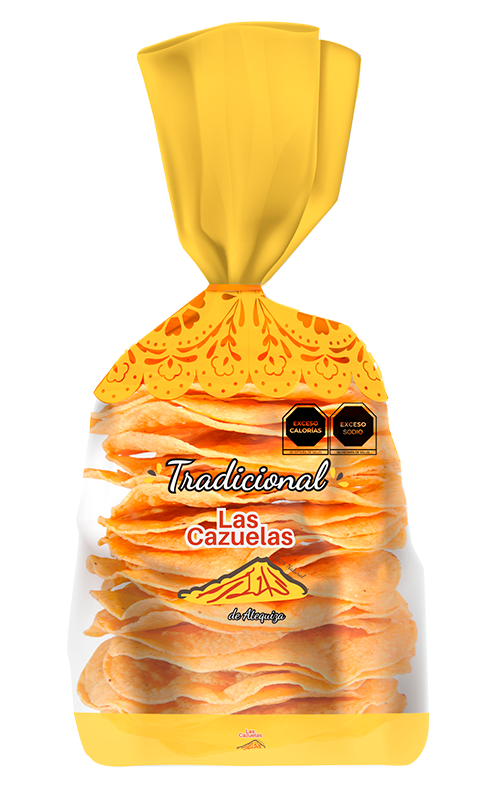
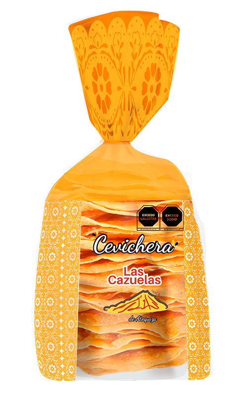
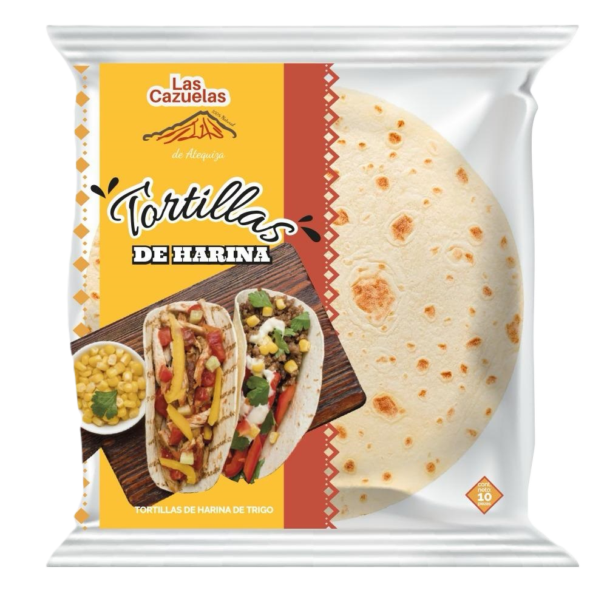

NUESTROS PRODUCTOS
TOSTADAS, TOTOPOS Y TORTILLAS DE HARÍNA
Deshidratada
Tradicional
Cevichera
Tostadas 100% naturales. Preparadas cuidadosamente, permitiendo conservar las bondades del maiz y su sabor original, además de aportar una consistencia crujiente y firme.

TRADICIONAL
Elaborada a partir de tortillas de maíz frita de manera tradicional, resultando en un tostado suave y crujiente. Ideal para acompañar pozole o cualquier platillo tradicional mexicano.

DESHIDRATADA
Elaboradas con masa de maíz, deshidratadas sin colesterol. Un producto que puedes acompañar con diversas recetas de comida mexicana.

CEVICHERA
Tostada ideal para mariscos ya que no se afloja por la humedad de la comida, disfrutando por más tiempo tus alimentos. A pesar de la resistencia es suave al masticar.

TORTILLAS DE HARINA
Tortillas de textura ligera, perfectamente dorada en el exterior y tierna en el interior. Con un sabor delicado a maíz y trigo, son versátiles para enrollar rellenos sabrosos o disfrutar sola.
LAS DELICIAS DEL MAÍZ
TOTOPOS
Transforma tus platillos comunes en deliciosas opciones mexicanas, para unos deliciosos chilaquiles o para botanear, es fácil y rápido. Elaborados con masa de maíz.
CHILES Y ESPECIAS
En especias y chiles tenemos el mejor precio de la región, ya que contamos con proveedores directos del campo.
CHILES Àrbol, guajillo, dorado, ancho, cascabel.
ESPECIAS Pimienta, ajo, canela, ajonjolí, clavos, cominos, etc.